冯冯芭蕾舞剧 SNOW LILY
莫斯科世界首演
一个乐盲── “在莫斯科芭蕾舞台上”
冯冯
一山一海 / 誊录
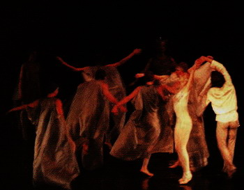 我的自学音乐因缘？
自己似乎从未想到这个问题，也不觉得有什么因缘，老实说，我并没有什么学习音乐的环境，更毫无因缘，不会看乐谱，不会弹奏任何乐器。
我的父亲母亲双方家族都没有什么音乐细胞，祖父一代从未见过面，弄不清其身世背景，父亲是一个骑在马背的骑兵小军官，弄不清他是少尉或中尉。五岁大的男孩能记忆多少早已亡故的父亲？除了偶然凝视退色的马背上的骑兵尉官，毫无笑容的威武，雄赳赳的样子，看看也不像是有什么音乐细胞，或者唯一的音乐辨识只是军号在吹奏着单调苍凉的声音吧。
照片中的威武尉官虽是英姿焕发，却带着一些粗犷野性的剽悍，没有丝毫没有任何音乐的感受表情；这样的一个骑兵小将，怎会有一个成为作曲家的儿子，既不雄赳赳，也不够男子汉气概，多愁善感，畏羞胆小，畏畏缩缩，自卑自怜的，这些都有，却毫无音乐细胞。
母系呢？历代都是山居人家的贫穷佃农，听过什么叫贝多芬、莫扎特？或者偶听传来壮族的笙歌杵鼓的单调枯燥？一家十数儿女，居破烂泥砖土房，野薪背负归来，锅中热气腾腾的稀粥，难得一饱，风雨飘摇，人畜共处，沥沥经夜，饥寒交迫，流泪河时能干？
贫女赁工于都市，独立维生，节俭积聚零钱，接济娘家父母与弟妹，尚且不遑，何知音乐 。
丈夫远出，无钱就医，逾期贫妇为有求援于邻，在贫民病房，难产剖腹，胎儿已气绝，被弃垃圾桶中，产妇哀泣祈求观音菩萨，忽然旱天巨雷，电鞭劈打，强光闪耀，我母痛哭，我心至痛，亦啼哭于桶中，已与婴儿合为一体！后被抱交回我母亲怀中，从此开始凄惨悲伤的婴儿至童年。
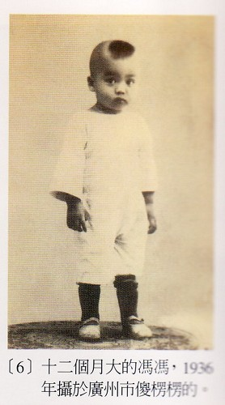被父亲遗弃，母亲佣工胝手胼足维生抚育，尚且不遑，何来音乐？哪里知道什么布拉姆斯摇篮曲？唯有常听母亲低声哼唱的催眠歌声而已，慈母怀中授乳，低头微笑，悲楚含泪，我仰望亦不禁泪流不止，悲惨哀愁的人生！孤独凄凉的开始啊！母亲哼着她的山乡歌谣，使我渐入梦乡，这就是我最初听到的音乐吧！
由于家贫，母亲外出为佣，我常被锁留在陋舍，孤独一人，终日难见母亲一面，没有任何玩具，更遑论什么收音机，彼时未有电视，何来音乐？父亲只回来数次，印象不深，他态度粗鲁暴躁，一回来就殴打我母亲，弱母稚儿都在哀泣，我实在怕见父亲，他不来，我反而安乐一些。
四或五岁丧父，我没有哭他，也没有机会去送葬，反而庆幸没有人再来殴打我母亲，从此母子相依为命，尝尽人生辛酸哀愁，从小挨饥的孩子性格忧郁孤独，畏惧陌生人，尤其惧怕男子，上学常被男生殴打欺凌，个子弱小，老师不得不将我编与女生同坐，我竟须靠女生的集体保护，使得免于被男生欺凌。
每到唱游之课，我随女生之队起舞，但是我十分笨拙，举步维艰，不能跟随风琴奏出之音乐跳舞，亦不会挥舞两臂，笨拙窘态百出，成为全级笑柄，每每羞愤逃走，躲在角落哭泣，呼喊妈妈。可是母亲去帮工未能赶来，老师按着风琴歌声，轻快的旋律，却成为对我的锥心之音！我憎恨音乐！我憎恨音乐！
放学，群儿都被父母接走，我独自被遗漏在大堂，孑然一人，仰望高悬的耶稣基督油画圣像与十字架雕像，我无论走到任何角落，耶稣的眼睛都盯着我，衪的面也扎胡如刺，好不可怖！老师说耶稣爱小孩，我却是愈看衪我愈心惊胆战，逃跑到大门外，猛烈咳嗽，母亲又还不见出现，教堂那边传来风琴与合唱的诗歌，圣洁悠扬，我这边已经泪下如雨！从此我怕听圣歌，却又爱听圣歌，听了又爱哭！
难民营外的箱板山难民住宅区，大人都以外出打石子、挑沙土谋生，只剩下小孩在家。五六岁的我，必须在露天用砖头砌灶、用拾来的旧木材皮煮饭，因为妈妈进坑去做工未归，须到夜间才回。砂锅里刚煮熟的糙米饭，被石子飞来打碎，抬头仰望，十个土著村民的大孩子俯视着我，拉开裤子，向饭锅撒尿，又丢下一团狗粪！“吃吧！吃饭吧！”“呵呵呵呵呵……”他们大笑，再没比这更快乐的事了！山下教堂圣乐悠扬传来：“万古磐石为我开……”耶稣多么慈爱……可怜我早已哭倒在地面泥泞之中，这个来踢我一脚，那个来吐一口痰，“万古磐石为我开……”我泪下如雨，从此一听闻此圣歌就哭泣不止。
有一天，尽受欺凌侮辱的弱者忍无可忍，挥出暗藏拾来的刀片与半截汽水瓶，拼命攻击那群坏蛋大孩子，一连割伤了好几个，血流满地，他们起先惊惶逃跑，后来聚众上来，把孤独的我打翻在地，拔刀要杀死我。危急之际，我无力挣扎，只有高呼观音菩萨，又大声用潮语呼救，临近的潮州孩子闻声，成群赶来，合力赶跑救人，从此与我成为好友，我常出入潮州人家庭，成为潮州孩子，甚至随友去参拜潮州人方氏祖先祖祠，潮州音乐于此时深入我脑中。以后的一生，我都特别偏爱潮州音乐，远在海外，一闻潮人乡音，就生眷恋，难得一闻潮乐，偶一听闻，无不泪流满面。
操劳过甚成为痼疾的母亲，无力兼顾我，就把我送到教会学校去住校就读，被困禁般困居校园内，日夜都听闻圣歌，熟读圣经，故亦追随英籍修女或修士日久渐渐诵晓英语与法文，奠下日后外文基础。母亲每月只来校探望一次，每次必携带昂贵美国苹果或金山橙前来，然后又匆匆赶去为人佣工。星期日或周末，校园无人，播放圣歌或圣乐，悠扬优美，七八岁大的男孩，一手捧持苹果，一手扳铁栏栅，目送蹒跚离去的慈母，遥唤一声妈妈，未开言，早已哽咽！泪如泉涌！惟有祈求观音菩萨庇佑我母平安无恙！此时，汉德尔的圣乐与我心中的思念忧虑慈母情绪结成一片，听到巴哈的圣母颂，我早已泪流满面，跪下祈祷，又呼叫圣母，又呼唤观音菩萨，两者已经融合为一。
我母以佣工所得供给儿子寄宿教会学校，负担沉重。她自己节食俭用，亦无法支持我的学费与膳宿，她唯有兼职苦干，终因辛劳过度而病倒，检验证实是当时视为绝症的瘤癌之类，她自恐无望，未免我见她痛苦，乃将我寄托带往台湾，投靠他的广西乡长夫妇，请他们把我养大成人，“为奴做仆亦不妨”，她托人写信：“但求养大吾儿成人！”
不情愿的十二岁男孩被押带登轮，踏上陌生的土地基隆港，自己搭乘火车来到台北。遍寻乡长不获，不知已迁居何处？从此流落台北火车站与博物馆后廊之间，饥寒交迫，身无分文，迫卖母亲所赠腕表，购进擦鞋工具，以擦鞋谋生；或为食摊任役，换取残食苟延生命。风雨寒夜，露宿博物馆或台北火车站，前途渺茫，无枝可栖，怀念在港住院之慈母，不知她生死吉凶。公园音乐亭播放西洋古典音乐名曲，玛辛尼的“泰绮思”冥想曲，哀怨不胜，回肠荡气，句句摧心！泪眼仰望路灯，朦胧一片，冷如雨丝，寒风如刃，寒栗难支！手提鞋箱，走向车站候车室，寒雨洒没热泪！人世之悲惨，为何都集于我此幼童一身，仰望冷雨夜空，呼唤观音菩萨又呼唤圣母，或属迷信，但一个幼童，更有何人来伸手救助？
午夜，最后一班南下列车开出，月台已无一人，轨道寒铁闪光，冷雨斜泼，月台播音萧邦“别离之曲”，句句摧心裂胆，声声柔肠寸断，我痛苦难成声，伏在栏栅上饮泣不止，悲泪难遏，世上没有一人伸出一手施予我，援助这个流落异乡的孤儿！
“别离曲”从此深深种入我心底，后来的岁月，我常常午夜到火车站月台栏栅，只为了来倾听“别离之曲”的悲伤音乐，只为了再来回味，再来流泪，没有人可以送别，没有亲友，我只有目送缓缓远去的午夜列车离去！
或者这些就是我与音乐的因缘？多么气人！一个带领骑兵军官的儿子，竟这般不争气，成日流泪悲伤，竟无男儿气概！真丢人！真是愧为我父亲的儿子。我即未软弱，拿出男儿气来挣扎吧！我必须活着再与母亲团聚，母亲必须活下去，我必须挣扎，奉养母亲到老。我向观音菩萨发誓，倘若加持我母平安无恙，我将以我一生来实践观音菩萨的慈悲法门；我也向圣母玛利亚同时祈求，可怜我早已把两者混并成为一体。我也不知我自己算是哪一种教徒？后来我又去拜天后宫，心中把三位神圣都混为一个了，当然很可笑！可是，他们在我看来是同一个！只有在祈念他们之时我才会聚气重生，咬紧牙根去挣扎求生！在心理学上，或者这就是等于婴儿寻求母亲的慈爱保护一般吧！
经过两年多的流浪，我终于找到了乡长，蒙他夫妇收留，住在猪舍旁边，为他们每天煮地瓜，上别人家去收残食，喂养三百头肥猪。不久又幸而考取编译职位，生活赖以安定下来，母亲也靠佛佑，开刀成功，得庆康复，赴台与我团聚，由我奉养。我感谢佛菩萨大恩，乃誓言实践观音慈悲法门，聊以报恩，我日后一切作为，均是以此念头为起点，实践虽尚无成功，却是常存此心！愿尽棉力！
悲惨穷困日子已过去，我有余力购买电晶体小型收音机，公余夜间自修或写作，一面收听中广或警察电台的古典音乐。每每回忆流浪期间午夜冷雨在公园音乐亭或火车站倾听播音，都恍如隔世！不胜唏嘘！生平沉默寡言，唯有自志而已。
偶然以外文参加欧洲的国际征文，不料竟得列为世界最佳短篇小说之一者先后两年。随即中文撰写首部百万字小说，藉书申怀寄情而已，并非自传。不料竟获广大读者赞及获得优良文学奖，历尽艰辛人世辛酸凄凉，终于一夜成名，怎能不百感交集，泪下如雨，少年尚未得志，只是初露头角，怎料也招损毁随誉至，（佛经有此语）成为众矢之的，而且毁辱及我母清名。我受东吴大学石超庸博士校长赞赏推荐任教该校，终应缺乏学历证件而被教厅批驳，于台大亦如是，文艺圈谤言潮起涌至，十九岁的少年陷于精神崩溃边缘，黯然去国，走进他邦，但求一职奉母温饱而已，已无大志！迎母来加，我誓不再踏足国门矣！
来加之始，无业可就，母子生活艰辛，唯有各任劳工以维生，亦难得温饱。午夜梦回，感怀身世之飘零及吾母之凄凉，音乐旋律油然出现，不知来自何处？自小失学，在小学时已因不识五线谱而常挨老师责骂，唱歌亦五音不全，查实无任何音乐细胞。而此时刻突来旋律，如泉水之涌起于地，未学任何乐理，我居然逐句记写下来，历时一年之久，每夜记谱，成为“F短调第一交响乐”，其中多有怀念台湾之情绪，其实非常幼稚，未识配器之法。
在涉膝大雪中，将此曲谱持往温哥华交响乐团求见指挥英人戴维斯先生。讵料他只看第一页数行即评为“豪无天才！毫无希望！”叫我回去上学攻读音乐。可怜我仅得小学五年纪教育，初中一年，又无证件，又无钱，又饥又寒，谁家大学肯收容我？
踏着深雪，一路哭泣回家，寄居人家的母亲已经睡着，怎知爱子又一次深受心灵创伤？作曲与慈母熟重呢？既无天才，何苦再写？从此我放弃作曲，历二十余年之久。只是从事劳力操作及业余写稿，以奉养慈母生活为重。此二十余年当中，我怕听古典音乐，只知劳力及笔耕谋生，少年时代短暂的三年风光，早已成为一场春梦，不堪再忆念了。
以五年时光，写完我毕生力作“空虚的云”一百五十万字小说之后，已感才尽了。休眠了二十年的音乐兴趣忽然渐渐复，我不甘就此全部放弃，于是重新自修英文乐理、书谱及作曲，不敢再存任何奢望，只求寄怀而已！我一生先后被人讥为“毫无天才”数次之多，我已不敢自命有任何才华，唯有当作绣花或结绳之消遣罢了。
先写成十数首唐诗宋词之配曲，仅有自己哼哼消遣。此外无人垂顾，我的“音乐人生”，四十开始，堪称世界之最迟！岂敢望有成？
一九八九年，忽发奇想，为报佛恩，拟仿西方圣乐创作伟大场面之佛教圣乐，于是创作的一批十五首现代佛教圣乐，其中以颂念观音菩萨者占最多数。形式类似西方圣曲之大弥撒曲，镇魂曲等大合唱与交响乐相辅。两年苦干，完成全部，却无人问津，台湾相熟出版人亦不肯支持制作，数位出身作曲系之音乐家评为“非驴非马”，无一乐团及合唱团肯予演奏，灰心之余，我又再扔笔停写。
在绝望中，不可思议之事终于发生，从美国奥亥奥州来访我的一位马任潮教授的夫人邬达程，听了我的台弯原始录音之后，推荐北京中央交响乐团退休指挥马任源先生及长子作曲家马丁（是她的父兄及夫侄），马氏父子是北京音乐名人，在他们的推荐之下，获得中央乐团同意制作我的圣乐。不久又获得美国慈济总会执行秘书长黄思贤居士独立赞助三万五千美元支持乐团的演奏与录音开支，由首席指挥家胡炳旭先生指挥，录音两小时之音带。乍听之下，我禁不住热泪奔流，因为感慨良多，经历无限艰苦，才终于达成发表现代化佛曲的心愿！听来每首均是发至内心深处最诚恳虔诚，至少已经感动了自己，不管它多么肤浅幼稚，不管它有多少缺点，总是难产得来的第一胎儿呀！再丑陋也是自己的孩子，也都是可爱的。
回忆及此批圣曲，当初所遭受的佛教圈内种种反对，与音乐圈种种拒绝，怎能不感慨万千，当初只有天主教的卡尼主教赏识，竟能破除宗教门户之见，命令他的天主教信徒合唱团试唱我的佛教圣曲，卡尼主教的胸襟多么难能可贵？可惜我的CD发行之时，此位神父已经因病去世，竟无机会送他一份CD请他欣赏！
我母亲对于古典音乐一无所知，她只爱听传统广东大戏音乐，可是她也说我此批圣乐听来很好听，不过佛教界的一些极端保守的大德就不那样开放。他们群起攻击找，指为基督教音乐，指责我企图把佛教音乐变成基督教圣诗，说我破瓖了传统佛教音乐的庄严优美，有不少道场的主持人甚至公开禁止信徒听赏我的圣乐。也有人指为妖魔异端。
我采用西方古典音乐形式与和声学及对位法，使用北京国家交响乐团与合唱团，所制作的这批圣乐，在佛教圈受到了杯葛，只有慈济功德会愿意予以义卖推广，也只有较为年轻的一代喜爱我的音乐，似乎音乐界人士的反应比较容忍得多。尤其是并无宗教信仰的音乐人士，很多都赞赏这些大合唱圣曲，视之为艺术作品可以比美韩德尔与马辛尼的圣曲。北京的音乐家马丁与指挥家胡炳旭，认为那是我开始展现天才火花的作曲，马丁说有一天我会成为世界级的作曲大师，他叫我加油；叫我别管宗教人士怎么说，他叫我跳出宗教范围去创作纯艺术的作曲。他很少来信，可是每封都诚恳鼓励我，他说他会尽力在北京找音乐团的好友帮助我。
“现代佛教圣乐”遭到佛教圈排斥，使我感到很沮丧灰心，我自己想改弦换辙。于是在一九九○年七月，我开始试图写作纯艺术作曲，我生平最崇拜的钢琴协奏曲有五首：以柴可夫斯基的第一号钢琴协奏曲为最令我着迷，其次是葛力克的第一号钢琴协奏曲，再次是拉曼尼诺夫的第二号钢琴协奏曲，再次是贝多芬，再次是普洛诃耶夫。我不会弹钢琴，只会一只手指叮叮叮的敲，我却异想天开，要模仿柴可夫斯基写一首钢琴协奏曲。
自知在作曲技巧、理论、对位、和声，都未合格。若在中学考试，我怕最多三十分。可是我一定要克服这些困难，我重新再恶补英文的乐理书籍与配器法及乐器介绍，看到头晕眼花、脑袋发涨，索性抛弃它，不管一切，就开始记谱，写完再说。期间并无使用钢琴，因为不会弹，只偶然试一试音，每天规定必须写一至两小时，把“豆豉放在梯级上”，经过大半年，居然也写成了钢琴部份；然后再接再厉，像乡下老太婆刺绣，一针一针地绣它，把各种乐器的音符填上去，前后一年，三百多天的耐心填写，也就把它全部完成了。却是敝帚自珍，不懂得如何计算演奏时间长短，后来方知长达五十五分钟，恐怕是全世界最冗长的钢琴演奏曲了。
马丁收到此一总谱，交谱中央乐团转胡炳旭先生。我想此番休矣！怎能混得过关？不懂钢琴的外行人写演奏曲，怎能过关呀？怎知马丁来信说：大家都认为是天才洋溢的大师级作曲！已经具有世界一流水平了，决定演奏录音。（他们请了该团的首席钢琴家洪育慧小姐主奏此曲。）
是梦疑幻？胡炳旭已指挥中央乐团演奏录音了！马丁把母带数码带寄来，我自己听了分带颇感诧异？我何时写下此曲？都已记忆不起来了，若不重看手稿，不敢相信，听来疑是柴可夫斯基写的中国风味协奏曲，不少乐句风格是他的“第一号”的影子，听来很奇特，也不算难听，可是我后来就不想再听它了。因为自感走不出柴氏的巨大阴影，也嫌它太冗长重复，好几次去函请马丁替我删改，马丁同意它太冗长沉闷，原来他们当初并无删节，怎么写就怎么奏，以求存真，并无去芜存菁。等到我要求去芜，马丁说先觉得太长，现要删节，却有感觉到为难了，每一句都舍不得删掉，其中有些是神来之笔，删掉太可惜，但他还是终于为我删减了十分钟，成为现版的四十五分钟，他说：“不能再删了！”
好坏不论它，此曲的钢琴技巧难度很高，与乐团的对位相当困难，是实非我始料所及，有数处乐句细节，他们不得不予以简化以利演奏，我倒还能听得出来，大体上都是没什更动的。外行者如我，怎知道已经在一个小节内写了四十八个音符？又不演（GLISSANDO）。
尽管有人赞许此曲很美，尽管在台北的美国指挥家梅哲说听了感动，要求我给他此曲的第二乐章带去维也纳音乐会演奏，我自已早已不愿再听此曲，因为觉得仍非独创，我必须另外起步，必须走出柴可夫斯基的巨大阴影，美加的中文报纸称我为柴可夫斯基第二，是善意的恭维，但也使我警惕。
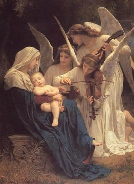 一九九二至九三年，我这个愚公，又去移山，以半年时间，磨铁成针般，写成了“E短调第一号小提琴协奏曲”。
连小提琴都没摸过的人，闭门造车，写成此协奏曲，岂非荒唐？但是找一向喜欢布洛克的小提琴协奏曲，苏格兰作曲家能写出协奏曲，身为中国人的我，为何不可以一试？贝多芬、孟德尔、拉洛……这些伟大作曲家把小提琴协奏曲都写尽了，哪有余地给我这个外行人来写？中国大陆流行数十年的梁祝小提琴协奏曲，风靡一时，从绍兴戏曲得来的旋律很美，可是它似乎仍不能与布洛克的协奏曲相提并论，中国人的音感只有中国人才欣赏，很难被国际接受；布洛克与上述名家都超越了民族音乐，成为世界性的作品。我门中国作曲家似乎肩上背着非常沉重的民族音感包袱重担，主动或被动地都自觉有责任把民族音乐介绍给全人类，显然人人那以比为己任，也以中国民族音乐为荣。就像中国佛教人士，认为佛教音乐必须只限于五音律的单调，我这个外行，自感无力背负此一民族重担，可是也仍然企图分担，于是写了富有中国色彩的此一首E小调小提琴协奏曲，却未能采用任何中国民族戏曲或音乐，也未采用五音律。无论如何，听来仍是很有中国味，是“杂碎”呢？是“蚕丝”？是“蜂后”？都很难遽下评语。三十五分钟的此曲，听了自己也泫然泪下，灵感来白唐诗两句：“日暮乡关何处是，烟波江上使人愁。”流离异国三十多年，对于从未履足的中国大陆，只有在电视上见过，并非家乡的湘江景色，竟会产生此首协奏曲，也是奇怪的事。拉奏者是中央乐团首席小提琴家刘云智先生，才二十七岁的这位自修成功的提琴家，演奏十分投人，感情丰富，传说他当时曾经泪滴琴面，若我再有新曲，仍盼能请他屈就为我演奏。以此曲而言，实不作第二人想，我不知那么平凡的作曲，能被他拉得那么动人！
写完小提琴协奏曲，心中又再不满意自己，总是想再突破，于是又写了“E短调第二号钢琴协奏曲”！可是也仍是仿作，此次是走不出葛力克的阴影。他的第一号钢琴协奏曲奏着实太完美了；他英年早逝，一生只作此一首协奏曲，非唯由于短命，恐怕也是已经无法突破吧？我着迷此曲，多于萧邦作品。我同意一位美国指挥家之言“葛力克的第一号钢琴协奏曲是最美、最完美的同类作品，超越任何作曲家！”我何人耶？怎敢步其后尘？
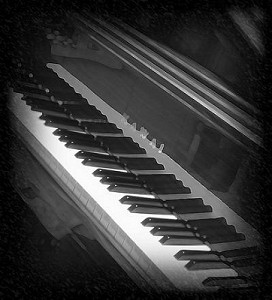 傻瓜作傻事，不可以理喻，我还是写了这首第二号钢琴协奏曲，自感已尽全力，比第一号已有进步，紧凑的多，也优美的多，流畅自然。纪念葛力克这位挪威作曲家，当然就采用他的名句的变奏，以表仰慕景仰。令中国味道至此已经没有了，听来不似是出于中国人之手；演奏者仍是洪育慧小姐，此曲显然较为容易表达她的技巧，也是最讨好听者的一首曲子，北京、美加、台湾，各处都反应良好，马丁他们甚至肯定这是世界级大师的天才作品，简直是奇迹，他如此说，那么短时间，进步那么快、那么大！我自己听来很美，但，总好像缺少些什么，仍然没突破！
像小孩找新玩具，我不想再写同类的作品，我己经超越了民族界线。但并非否定民族，我只是想把中国民族特色重新再酿造一下，提炼一下，一定另有更高的层次；或者是佛教的境界，也应该废除形式主义，去芜存菁；或者在我的新音乐中，我应该另行找寻“自我”？找寻“空性”？日本有几位作曲家很成功地把禅意表现于其现代作曲，有很高的成就，可是我并不适合走上那些方向，音乐就是音乐，哲学与宗教是另外一回事。也许贝多芬的话更能说服我，他曾说过：“音乐是超越宗教与哲学的”，或者我不应去“刻意”求禅，更不必在音乐中刻意刻划禅意，若已刻意以求，就已经失去自然，难免不无匠意！或者我在当前还未到此境界，还是世俗一点吧！可是我应何去何从？
法国印象派作曲家大师狄布西与拉威尔的作品，极有提炼升华的东方色彩，而且使我进入一种无可解释的超凡境界，自由大自在，飘逸而谲奇清新，千变万化，有如流云彩霞，又如海浪潮涌，波谲云诡，太空深邃，奥妙难测，我连听赏都不够资格，遑论追循其作曲途径？可是傻劲一来，也就不自量力了。我第一首印象派作曲，名之为“牧神之夜”，其实灵感得自台北当年子夜的盲人夜笛，那支短笛之声，划破子夜的沉静，带来多少寂寥凄凉？狄布西的“牧神的午后”写出牧神的情欲，我觉得他并未写出灵魂深处。我何妨藉夜笛之声来试图探讨牧神的心灵？牧神之夜的形式与标题，都近似狄布西原作，后来的听众却不以为然，有人说是比布氏深入哲学境界，更深刻划心理，或许这是赞美之词，但确是我作曲的原意，只恨仍是力有不逮而已。十分钟的此曲，在北京演奏时，据在场旁听者说，震撼了北京乐坛，无不惊异为超级天才作品闪耀璨烂着天才光芒！也有人说已经超越了狄布西原作境界，当然也有人无法接受，总算是事论虽多，誉多于毁。我自己却并未沾沾自喜，反而觉得今后作曲更困难了，因为别人对我将会期望甚高，我自己也希望再有新的突破。
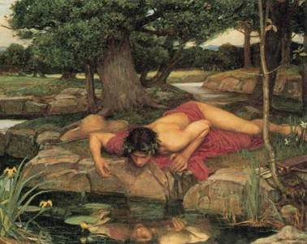 一九九四年六月，在台北为狮子会主办孤儿院筹款义演之时，我在后台等候出场，心情紧张，却不知怎的一来心中闪过新的念头：“水仙少年”那西昔斯的故事。恐怕人人心中多少都有一点“自怜”吧？水仙少年或者正是我们自我心情写照之一罢？回到温哥华，我就提笔，以两个月的时间写下了新作“水仙少年”交响音乐，只有二十分钟演奏，在北京音乐界却引起很大的反应。马丁，胡炳旭和他门的音乐家朋友，一致异口同声肯定了我是新的印象派作家世界级大师，都说这时才是真正的我，以前的作品都无法与这两首新作相比了。马丁说从未见过一个作曲家靠自修会有如此神速的惊人进步，真是一日千里，真是天才中的天才！而且是神奇的奇才！
听来怎会不开心？一个本来目不识丁的蠢材门“乐盲”，竟会被称赞为天才奇才！我不否认自己痛下苦功，但是不敢承认是天才或奇才，只不过是抱着“磨石能成镜”“磨铁可成针”的耐心而已，哪有什么天才？
两首印象派新作的成功虽小，却把我推上了今后的印象派之路，我并未以两曲为傲，更未以之为足，我自感心中仍然在涌出很多音乐，都是我前所未听闻的许多谲异奇特的音乐片段，不知来自何处？好像来自太空深处，又像来自云层大气，或是海底波涌与森林，却又都不对，或者这就是所谓“灵感”？没有一定的调性，至少有十二个调，大部份是半音阶，也有更细分的音，都是不协调音程，奇异的不协调的和声，不规则的对位法与穿插，不规则的拍子……比前两曲都更复杂，更神秘奇幻。还有神秘的男声女声大合唱歌声，若隐若现，追寻却又不见，霞光万道，瞬息万变，人多么渺小飘忽在那无限的时空……那些奇异的音乐在我心中脑际，何止一万个姿态的舞姿，何止一万种彩色的交织缤绘，捕捉不住，从手中流溢而去，千种回舞，万种飞翔……没有文字可以形容。
是佛音，是魔音？还是精神分裂的恍惚？那么难以捕捉，却又那么引诱挑逗，心已与霞光化为一体，识已随以太溶化于太空之中，海潮澎湃，冲浪眉头，汐退眼底，沙流滚滚，沫回旋白，紫雾初漫，浪峰隔落，又忽然消失，无影无踪，无处可寻，感慨泪盈，却不是悲伤。
于是开始动笔，写下巨型全套芭蕾舞曲“雪莲仙子”的第一个乐句，每天日夜都被那种神秘的音乐所萦绕，如影随身，只有写下音符，才感解脱，但是可恨毫无作曲专业基础，难尽录全意，就如同风中抓取一天飞花，能取几许？
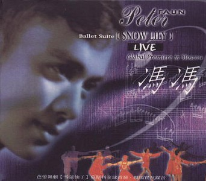
一九九六年冬天，被雷雨困在屋内，无以自遣，只好如比乱针刺绣，把音符填上五线谱，往往终夜伏案，埋头磨铁，不知达旦，形同着魔，终日不语。直到一九九七年二月，全曲完成，合计二千四百乐句小节，总谱六百多页，每页四节，二十五至三十四种各种乐器配合，包括铜管、木琴、弦乐、打击乐器全部，另有多种奇门乐器，包括风声机（Eliophune），沙槌，俄国三角拨弦琴，西班牙响板，日本竖鼓，等等一般古典音乐交响乐团不使用的怪物，其实我还打算把中国古代的古铜编钟写起去，知难而退。如此厚册的总谱，其中还有男声女声的大合唱谱子，两部竖琴，乐团规模之大，实非原来所能想像。曲子是以一年多时间完成了，却为出路发愁，谁肯演奏这么巨大又艰难复杂的音乐？它比“牧神”与“水仙”都困难了何止十倍？其中最难的是太复杂的精巧的配器对位法，往往在极不合理的急短时间穿插，又是不协调音程的和声，没几句就移调转拍子，我并未能尽录灵感原意，但已经足以令很多指挥家头痛的了，真不敢预料俄罗斯交响乐团与其首席指挥佐丹尼亚先生能否达成我的要求？我从未写过那么艰难复杂的曲谱，也未见过，拉哈曼尼诺夫的钢琴第三号协奏曲，号称最复杂；拉威尔的印象派芭蕾舞曲“柯洛与达芙尼”号称最困难复杂，可是似乎也还都有规可寻，不像我的“雪莲”的困难复杂与狂放无规律，将来必有人说我是作曲家中的梵谷！对于我这个新作品，我自己都感到恐惧，老天哪！是我写出来的吗？不可相信！只有狂人才写得出来这样密密麻麻的精密而狂放大胆的配器对位“险招”呀，连我自己都已经看不懂它了！
我打算将“牧神”“水仙”与“雪莲”交给俄罗斯联邦乐团演奏录音，因为我听过他们的CD，觉得水准很高。我这些已经毫无中国味道的新作，可能不适合请北京乐团演奏，虽然他们演奏“牧”“水”两曲已有很好成绩，我还是想请俄人重奏以玆比较，“雪莲”的难度太高，也正应拿来考核一下俄国乐团，谁不想登上国际乐坛舞台？
说起俄罗斯乐团与指挥，我并不认识，因缘也是北京胡炳旭指挥给我挂勾的，胡炳旭于一九九五年从北京赴台北，暂代台湾省交响乐团首席指挥陈澄雄指挥几个月，(陈请假应邀赴罗马尼亚做客席指挥)期间受到曾去北京演奏与之合作的青年女钢琴家萧唯真小姐的宴请，席间胡先生谈起我的作曲进步神速，可惜没有国际指挥家予以提拔，萧小姐说在美国攻读朱丽亚音乐学院时，认识俄罗斯的著名指挥家佐丹尼亚，知道他肯提拔新进作曲家与演奏家，萧小姐后来就对佐丹尼亚越洋电话推荐我的作品，萧又在台湾的两家大电视网上弹奏我的两首印象派小品。萧小姐已是一位国际知名的钢琴家，常在国外演奏，又身兼两大对峙电视台的音乐节目主持人，盛名如日中天，与我素昧平生，从未谋面，竟能如此热心帮助我，足见她的风度胸襟多么不凡，萧小姐后来与陈澄雄应邀赴罗马尼亚演出，极获好评。后来她又应邀赴莫斯科演奏，指挥家正是俄罗斯联邦乐团首席佐丹尼亚。
出身与圣彼得音乐学院的佐丹尼亚，于一九七○年代曾荣获德国伟大独步全球的指挥家卡拉扬大师的“指挥大奖”，一跃成名，成为苏联国家交响乐团首席指挥。一九八○年代初，他受世界级名导演黑泽明的邀请，与之合作，指挥黑泽明的世界冠军名片“乌苏里江”的电影配乐，此片我看过，印象甚深刻，却也没料到会有一天与佐丹尼亚合作。
佐丹尼亚将我的“牧神之夜”短曲插入一九九六年十二月八日莫斯科音乐会的萧唯真钢琴演奏会，作为前奏，作为初步介绍。萧小姐与俄国女钢琴家的双钢琴节目均是名家作曲，从莫札特到普兰卡，哪有我这无名小卒站立余地？也可见萧唯真多么热忱提拔我，竟允许在她的节目中推出我的作品！节目单上把我名字与莫札特、贝多芬、普兰卡并列！这是我初次名列国际音乐会。
不料佐丹尼亚临时突然心脏病爆发，急送医院急救，无法登台指挥，临时由乌克兰音乐学院首席指挥戈沙辛斯基先生代替指挥。当夜音乐会，萧小姐的成就获得全场热烈鼓掌喝采，自不待言，我的拙作也连带沾她的光彩，“牧神”引起全场疯狂叫好，算是让我在国际初次踏出了一步，这是必须感谢萧唯真小姐的提携的。
其后，佐丹尼亚被送美国医治渐渐康复，他对我的作曲已有若干认识，与我彼此也常有电传通信与通电话，彼此有更多了解，我乃向他请求他指挥我的新作“雪莲仙子”与“水仙少年”。蒙他应允，在一九九七年一月十五日之夜，在莫斯科音乐学院的戏院举行我个人的作品特别介绍音乐会，并邀我去出席此一“世界首演”。其时我母患病，我不敢远行，而且，对于新作殊感忐忑，末敢亲赴聆听，唯恐被台下观众大喝倒彩或扔石头，只有在家伫候演出消息而已，心情之紧张，实难形容。
一九九七年一月十五日的演奏会，俄文海报及节目册子，都隆重将我名排列在佐丹尼亚底下，但比他较小字体，能获演出我已经心满意足，一介失学自修的乐盲，夫复何求？
在焦虑紧张等候之中，我提笔另起炉灶，关始写下新作，新的芭蕾舞的开头数场，尚未定名，不过仍是以印象派之自由大自在方式为主，预算以一年完成，但由于俗务冗繁，心情亦极不安定，时写时缀，不知何时始能脱稿？所谓俗务太多，就是家务与外界烦扰滋甚。家务举凡采买、烹饮、厨务、洗衣、清洁、打扫、剪草、砍树、修篱、维修房屋、补漏、奉伺汤药……本已终日忙碌不堪。而外界之电话日夜不停，问吉问凶，诉苦者有之，要求种种，无奇不有，要求以天眼诊病寻人、观察投资市场、夫妻吵架、外遇何在？儿女交友不良、逃学离家不归、家宅风水、先人情况，更别说是心情欠佳寻求安慰，更休提那些谰言中伤，恶语秽语侵犯、恶毒咒诅……种种奇怪电话，无日无之！纽约一个少女逾夜不归，其父母来电要求在温哥华代为用天眼寻找；台湾绑架案件，旁人来电要求天眼破案捕凶；谁丢了巴士月票或出国护照或什么文件，谁丢了汽车钥匙、钻石戒指或珠链，无不来电求助……其实我并无能力，爱莫能助，早年偶然误中，成数不高，至今更加老悖无能，对于来电，是百不一应，早已置之不理了。我颇为后悔二十多年前所发表之文章各篇，原意只是求证学佛境界初禅片面，而却不料后患无穷，使我终生均受滋扰，永无宁日，正信佛教不尚神通，岂是无因？修学行者时应以之为戒！
唯一可以从事作曲之时间是在深夜至次晨之间，夜阑人静，拔掉电话，我母亦已熟睡，我方可写作。可是也因而睡眠不足，日间会客，疲态毕露，无精打辨，哈欠连连。在此两三年中，因拒听电话及拒绝见客而开罪了不少人，外界浮言谰语四起，有谓我是骄傲目中无人，有说是着魔堕落，有说是身患不治之症，有云因邪行染上爱滋………实均属无稽。外界不能谅解闭门谢客专心创作，亦不解创作过程之艰苦，更不尊重创作，纵无恶意，也未免有欠考虑！或是失于无明！
作曲远比撰文困难，纵是天才亦须针针刺绣，何况毫无天才亦无基础？我作曲所历艰辛，实在千百倍于他人，实在并非挥笔即成卷，更非下笔如有神助。虽是灵感澎湃而来，阻挡不住，却是浪爆万朵，难取一勺，填下的音符，总不如意，百句千声，不得一字。此则较之灵感枯竭更为懊恼，若灵感方殷，忽遭外界电话或不速之客之打扰，则一切灵感尽失于片刻之间，永不再临。外人不明此种情形，误认作曲为容易可以随时恢复工作，一如开灯、关灯之简单，对我任意打扰，言之真是无奈！也可见大多数人士毫不重视音乐艺术，只以一己之私来役使于我，另一些人士认为作曲无聊，我应予以放弃，我应专心念佛吃素修行，我应以“天眼”助人，我应全心全力献身尽心弘扬佛教接引信佛，很多人主张我应出家为僧好好修行，自度度人，将来成佛，以了生死。自然也有人叹息我放弃修行根基而去大搞音乐是自堕魔道，有人愿意负担我若出家弘法之一切生活开支，却没人愿意赞助我作曲及发展！
我自感不是修行人，虽然为佛，只打算在家守戒已足，并无大志，不愿出家，更不妄想成佛，我学佛只是为做“人”而已。我并无奢念成什么道，我也毫无修为境界，若说已往略具超感，其实也只是人人均有的潜能。世上以“超感”牟利者比比皆是，美加的“天眼通”在电视上招徕顾客，收取报酬，‘超感“或第六感原非学佛人所专有，亦非“神通”！我多年前已发表短文“所谓神通即非神通”，超感只是释放的潜能本能，是一种较敏锐之观察分析能力而已，任何人，学佛与否，心静均可达到，并非什么神通境界。“天眼通”离真正的“禅”境尚远！远甚！远甚！若以为略具超感就是趋向成佛之境界，则是大误会！纵是能“以心役物”或神通变化，亦非成佛之境界！术者能之，鬼神能之！幻境而已！非佛之道！
我当年涂鸦，论证佛法中有超感之肤浅层面，但并非佛法本质本体，不幸此等文字之真意每被忽略，读者本末倒置，舍本逐末，甚至未经阅读，只凭耳闻道听途说，即以迷信视我或以迷信而予以种种打扰要求，滋扰至多，使我常年日夜受扰，悔恨莫及！我多年已不再为文发表，此乃主因！所恨者，未能收回已往出版文章予以焚毁！更恨者，难复我清白之名！如今沦为“半仙”、“半妖”、“半魔”，千手所指！能不痛心。
自问并无才能，更无天才，只是耐心有恒，深信磨石可成明镜，磨铁可以成针，作曲是精神寄托，在创作过程中，亦可暂忘世俗烦恼，也能获相对之清净与自由自在，念有所寄，能免烦恼，也可算是修行一途吧？佛法八万四千法门，除了念佛名号，也还有其他途径入静定，拼命持念佛号不停，精神过份紧张，未能松弛，也就未必是福！所以有人念佛过于精勤，变成走火人魔，精神分裂！死念活念，日夜不缀念数万遍，拼命凑成念佛次数，精神紧张，毫不自在，何如随喜、随缘、随意、自由自在去持念呢？又何妨也找些精神寄托？或是练上书法、绘画、作曲、插花、运动、散步、旅行（游方）……作为多元的修行？
是以我以作曲为修行摄心之一法，任何人能专心从事任何创作或工作，也是摄心之法，并非只有持念佛号日夜万遍才是唯一法门。佛爷分秒都听你叫喊祂，使他耳根不得清净，烦不烦呢？虔心一念，岂不胜于流于形式的万遍？
受不了出家的苦行，受不了出家仪轨与戒律的束缚，我无意出家修行，只想仍做个凡夫俗子，不想成佛，也无大志度尽众生。能在家清净作曲及奉侍慈母，我于愿已足，来生如何？我不去管它。只愿今生问心无愧此心，有托于创作。守戒守法，欣赏音乐，享用果蔬，看看电视与影片，这就是人生乐事了，没有事业雄心，也无攀登喜玛拉雅山的壮志。只想把心中的音乐写出来，新作三曲，是我作曲的转捩点，虽仍不如意，也算是迄今的尽了全力之作，除了马太太、马丁，可能同情者是不多的；最意料不到的同情及支持最力者，就是佛乘宗的第三代当代宗师李善单居士。
佛乘宗的师生与我素昧生平，我对于佛乘宗一无所知，仅在一九九六年才初次接触佛乘宗来访的学员，却没意料到宗师李善单居士会随后来加莅临寒舍先后两次，博学精湛的数学家与佛学家李善单竟会与我一见如故，畅谈竟日，谈宗教、科学、文学、音乐、哲学、艺术、玄学……彼此极为相像，相见恨晚。成为忘年之交。李先生非但是一位数学家与宗教家，也是一位优秀的作曲家，所作的两首佛教新曲，精练得有如千锤百炼，感人至深，实远远在我拙作之上，听了他的CD，令我无限佩服，他说话与唱歌都中气充沛，更非我的嘶沙所可望其项背，我打算将他的两首佛曲改编为规模巨大之大合唱，由管弦交响伴奏，而他也颇为赞赏我的作曲，慨然表示今后都将尽量支持赞助我作曲的演奏，也就是由于获得他与佛乘宗与文教基金会的鼎力支持，我才得以顺利促成莫斯科一月十五日的演奏会。一个宗教团体组成的文教基金会，除了支持宗教文教活动，还能赞助非宗教性质的文化活动，例如：他们赞助了白俄罗斯单车环球旅行团，举办世界杯象棋比赛等等，又支持音乐演出，的确是与众不同的宽宏胸襟！难能可贵！李先生说音乐是文化的一环，是应该支待的，应该投资培植作曲人才，也等于是延续发扬文化慧命的一种。他的远大眼光，确是令人钦佩，决非一般文教基金会所能企及！一般的佛教文教基金会，只肯大批印赠佛经到处乱派滥施，或是举办佛教梵呗大会，佛教文物展出，哪肯支持艺术作曲的演奏？哪会念及支持多元文化？
莫斯科一月份演奏会，此次由康复了的佐丹尼亚亲自指挥，动员空前的阵容，都是俄国的顶尖演奏家，加上合唱团，历经数月的苦练，终于盛大演出，从收到的录音带听来，可信是震动了莫斯科乐坛，现场录音可闻听观众数千人鼓掌高呼长达十五分钟之久！（开场的俄语介绍我是自修作曲，感动了观众吧？）音乐听来我也自感比前大有进境，这首毫无中国色彩的世界性作品，确有清新气象，虽未能尽出灵感原意，也就差强人意了，未必可比美狄布西、拉威尔或史察汶斯基，至少也听来有一点那种味道了，听着听着，就禁不住热泪盈眶！
仅长途越洋电话中，请李善单居士听听一段录音新曲，李先生说“冯大哥你好恐怖！怎么在短短的两三年，作曲进步这么大！从第一号钢琴协奏曲到现在，简直是脱胎换骨，上升了不知多高层次！太恐怖了！太恐布了！”
在温哥华郊市烈治文新成立的佛乘宗分会的讲师陈式失先生，与我及一些友人同在蔡小姐莉莉家中用她的音响设备试听此两卷录音带，大家都觉得很不错，驰名于世的俄国乐团确实不同凡响，佐丹尼亚不愧是世界著名指挥，竟能把如此困难复杂的交响曲及大合唱处理得丝丝人扣，而且忠实原作，极少更改。（我留意倾听，颇能分辨）在座十数人全体感到满意，都说光听音乐已可想象芭蕾舞的场景，应该予以芭蕾演出。
芭蕾舞的演出，成为新的困难课题！我不敢向李善单提出请求支持，我必须自己先向各处试试，美国的马太太也努力助我寻找可能的基金会，另外几位热心的女士也分头查询，我自己也发出数十封函电，向美加的芭蕾舞团接治，但是三个多月下来，只有一家回复一封礼貌的拒绝函，其他都置之不理！古典音乐作曲家的舞台如此狭小，无名小卒更休想打得进！另一家著名的唱片公司把样品音带原封不拆退回；加拿大的芭蕾舞团与唱片公司从不回信，亦不接听电话，我求约见无门；温哥华交响乐团的指挥也从不回信，不肯约见，至少三十年前我还能见到指挥一面，现在是连面也见不到了。在莫斯科成名也无济于事，比较起来，佐丹尼亚还算不错，没有架子，他肯立即回电回信，也肯提拔我，问题是那个苏联时代支持的庞大乐团已经不获俄国政府支持，必须有人赞助才可演出，不能叫他们朽腹从公，他们月薪在五千美元以内，戏院场租，餐费、车费、运费、芭蕾舞团的布景、服装、练舞、编舞、教舞……再再需钱，而且为数不赀，我向谁去请求赞助？
台湾的几处著名文教基金会，我都去函试探了，某处回函说只支持省内音乐活动，不支持国外外籍作曲家；另一处要求苛严，必须有作品之CD及原稿五份，并需国内音乐名人五位推荐，又须呈验我的音乐学历证件，此时已是一九九七年三月底，我意料不到会收到乌克兰卡尔可夫音乐学院颁赠的荣誉作曲博士学位证书，我以之作为证件呈验，却被拒绝，说是不符合规定，（并非教育部承认之学府），另一处几基金会曾以百万美金购入著名小提琴借与某位小提琴家国际名人使用，却不肯支持一个自修作曲家在莫斯科演出芭蕾舞作曲。其实，演奏家固然重要，作曲家的作品更难得，小提琴名家奏来奏去均是知名的世界名曲，年华老去，也就退休，其艺术生命与成就，远不及作曲家的作品长久深远，对世界文化的贡献，你说是海菲滋大？还是孟德尔或贝多芬大？（海菲滋是一九四○年代全球最著名小提琴家，如今安在？他的录音唱片安在？）某大文教基金会，喜欢陈列名琴与支持演奏家演奏世界名家作曲，却不肯花小钱支持国人作曲向世界进军，未免太短视了！
富甲天下，财产逾百亿的富豪，不肯支持我这个自修作曲家向世界进军为中国人争光，幸而还有李善单这位“并非富豪”的热心新朋友发心支持我，当我在极端绝望无援之时，他伸出了援手，慨然支持我的莫斯科芭蕾舞演出！佛乘文教基金会甚至不愿具名，只是直接支持演出，不居任何名义！真是令我感铭五中！
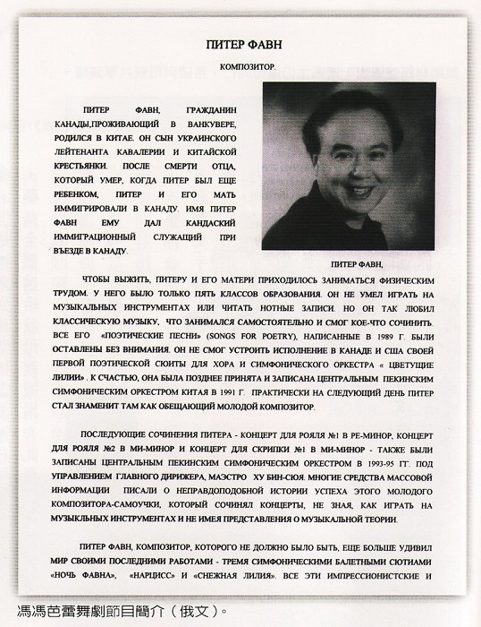
莫斯科的芭蕾舞水准，举世无匹，独霸全球，已逾两个世纪。柴可夫斯基作曲“胡桃夹”“天鹅湖”“睡美人”“罗密欧与茱丽叶”等芭蕾舞剧，风靡全世界。以后又有史察拉汶斯基的“火鸟”，卡察吐里安的“奴隶革命血泪史”等等名作，但是百年来极少再出现芭蕾舞作曲家。就是西欧各国，演来演去也只是“吉赛儿”等等数百年的旧剧，新作曲绝无仅有，原因可能是写作艰难，演出无望，所以无人肯做傻事吧？我以自修作曲而写三首芭蕾舞曲，确是愚不可及！可说是一百年来罕见的大笨瓜！梦想进军莫斯科舞台，能在柴可夫斯基名作的巨大阴影下演出，岂非痴人？若无李善单的热忱支持赞助与佛乘宗文教基金会同仁的支持，纵有佐丹尼亚与俄人出力，也成就不了演出呀！
外界人士不知，误认作曲成名就有乐团与舞团免费上演，还可分红利。殊不知古典音乐作曲家多么不值钱，不似流行音乐作曲家那样可以大赚版税分红利，成名就有商业机构争取或资助，发行作品赚大钱！古典音乐作曲家成名极难，古代的名家：舒伯特是穷困而死的，莫札特的天才无人能及，作品于今更受欢迎，但他也是穷困潦倒而死。能有几个古典音乐作曲家获得在世时的名利双收？除了李斯特这位钢琴大王之外，更有谁人？名家如贝辽斯，作曲也须由他自己找赞助人支持才得以演出，柴可夫斯基若无德国富孀梅克夫人多年的赞助，怎能演出作品？萧邦若无富豪女作家佐治桑的赞助，哪能演出成名？我何人也？ 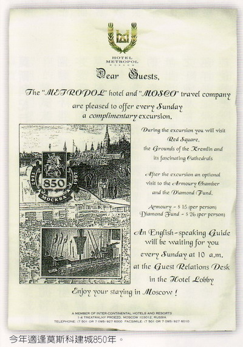
仅佛乘宗文教基金会与李善单先生的合力支持赞助之下，在佐丹尼亚与俄罗斯交响乐团及莫斯科芭蕾舞团的出力之下，我这个乐盲所作的芭蕾舞曲“雪莲”终于在莫斯科演出了！若无他们双方分别出钱出力的支持怎能成为事实？
李善单与学员三十余人，于演出之前的两个月，到加拿大闭关之旅，顺来探望我，并在新成立的分会欣赏此曲的一月份现场录音全套，由陈式夫驾车接送我及负责招待，单小姐与好几位师姊都被音乐感动流泪，大家都很赞美我的音乐，觉得没有看错也没有错予支持！感谢之余，我乃出动我独创的手影“兔宝宝”教给大家，此是一招两式，一只手做一只兔宝宝，两兔可以互相亲嘴，是我一向不传之秘！现在心软，想传给每一个小孩，大家要求我写一本手影教材，我若有时间，我必会写，连同我的称霸日本展出的折纸艺术，也都会传授给小孩们，（我可用一张纸，不剪不贴，折出：观音菩萨、耶稣基督、菊花、玫瑰花、螃蟹，因为怕日本人再偷窥我的秘密，所以在一九七五年以后就再不送作品参加展出，将来出了书，就不管被人采用了。折纸艺术其实有助于训练儿童手脑并用及老人的手脑协调，并非小道，而且它也有数学上的趣味。）
陈式夫催我写此稿电传付印，把我迫得团团转，不得不连夜开夜车赶稿，已不及计较文字是否通顺了，一连写了两三夜，现在该提到莫斯科芭蕾上演实况了。
有生以来从未去过那么遥远的地方。我对于莫斯科之行，原无此雅兴。上次一月十五日的莫斯科音乐会，观众疯狂呼唤我出场，我并无出席，未睹盛况，岂能无憾？虚荣心人人有之，我岂能免？但是母亲年老多病体弱，那堪越洋长途飞机旅行，一九九四年携她赴台，已经使她一下机就病倒，我怎敢携她飞往更遥远的陌生异国？因此我原不打算去莫斯科观看芭蕾舞的世界首演盛况，母亲看出我内心矛盾苦闷，她就说她要陪我去莫斯科，免得我为了侍候她而又再不能前往。她说她自觉身体很好，旅行绝无问题，我仍迟疑不决，李善单居士知道了，就托陈式夫送来一笔钱给我去买头等机票带我母赴俄，李先生同时也说要与十位学员赴俄观赏，有那么多人都会侍候我母亲，叫我不用担心。同时，他也托人把俄京的酒店套房为我们订下，在他的诚恳与周到邀请照顾之下，我只好壮胆前往。我的好友李伟强也愿意跟随我母子同行以便照应，佐丹尼亚夫妇也频频来电劝驾说莫斯科人人都想看看我，叫我别担心。于是我与母亲及阿强一行三人，乘搭德国航空公司班机于九月廿九夜飞往法兰克福，在彼处转机飞抵莫斯科。
抵达莫斯科国际机场之时是下午七时，正值狂风豪雨，俄人机场人员几全无人通晓英文，服务差劲，万不及德国机场。我须讲俄语始能获得服务员来就，他们却无轮椅设备，只用仓库推货之小型手车，上装小板凳，把我母亲当作运货般推运，一路上走廊又无灯光，他须用手电筒照路，原来俄国能源奇缺，机场电力限制，只开灯半小时给旅客。莫斯科国际机场建筑之窃劣陈腐破烂，难以言传，候机室全无设座椅，旅客就地而坐，屋顶漏雨，遍地是水，旅客秩序之混乱，不亚于东京的火车站，人头挤涌，互相碰撞，毫无礼让。阿强去租了推车来推行李，俄人带我们走出大门，我们就在檐下避雨，计程车司机成群一拥而上争拉生意，索价高达两百美元又彼此争吵，我以俄语说明有人来接，他们才散去。我的俄语是最近因决定赴俄才买音带恶补的，居然也可派上用场，简单会话勉可应付。另外，我也恶补了五天德文，在法兰克福却用不上，因为德航人人能说英语，服务态度亲切殷勤周到又准时。
等了近一小时，李善单与众人出现，原来他们比我们早到几小时，从东京乘日航飞来，先进城住进酒店，随即又回头赶机场迎接我们，李先生很客气，还请了贵宾大房车来给我们坐，他自己只坐小汽车，他的学员们又献花，十分恳切恭敬，周围的俄人都在猜论我是何许人物，我手持加拿大国旗，又会说俄语，又是华人，又那么多人欢迎，有人向俄人问我是否是电影明星。
在大雨中看沿途风光，莫斯科的主要大道又直又宽。有十线行车道，两旁灯柱林立，非常壮观，但因能源缺乏，灯光昏暗。车行一小时，进人市区，沿途均无街树，屋房古老，似是数百年来之石造或砖房，房窗细窄，难辨孰是商店。俄文招牌亦甚细小，不见有类似美加的巨大窗橱。
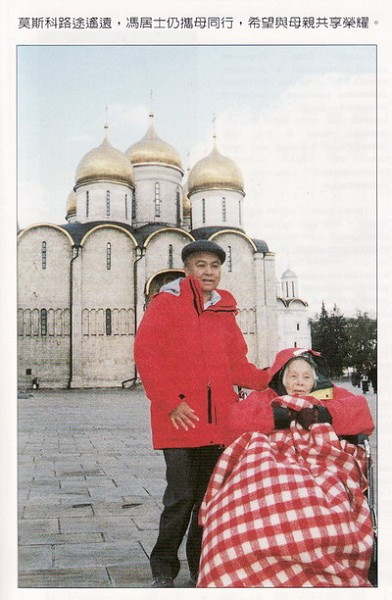 大都会酒店位于红场旁边，在皇城旧墙之旁，原是俄宫一部份的国宾馆，五层石楼，气派堂皇，陈设华丽，古色古香。我不料李先生招待我们住入如此豪华酒店，我说但求普通旅馆即可，李先生说莫斯科治安欠佳，他的友人说只有此一大酒店警卫森严最为安全，其他地区酒店常有旅客被抢劫甚至被杀害之发生，我也只好来之则安之，不过心中过意不去。
五楼套房是两间相通，我母住一间，我与阿强住另一间，各有两床，倒也宽敞舒适，其他各人分住各层不同。此处住客全是外国游客，有人满之患，但看来均属高尚人士。彬彬有礼，可通英语，反而柜台职员英语欠佳，令人费解。后来发现俄人绝大多数不识英文不能讲英语。连机场的询问中心职员亦不能讲英语，由于马丁从北京来俄班机误点，我与他的婶婶及朱太太雇车赴机场接他，向服务台打听误点情况，服务小姐竟不能听或讲英文，我必须用俄文询问，如此国际机场，令人失望！不懂俄文的外国旅客在此受尽苦头，十分不便！我们在机场等候了四小时，才接到了马丁，原车司机俄人仍在等候，并代搬行李，态度友善，亦善谈，知我略通俄语，他就一路讲解介绍，可惜我只听懂一半，原来他是酒店相熟的独立的士司机，态度比外面的野鸡车好得多，收费也较合理，莫斯科计程车不计程，须先讲好价，否则会被敲一大笔钱。
次日是十月一日，众人集体去逛街。我却不能随众同往，因为母亲忽然病倒，头痛、耳痛欲裂，我必须侍候床畔，众友主张召医，我想医生会把我母送入医院随他们乱来摆布，我万不肯延医，我自己会诊病，我观察母亲是突发的中耳内耳感染发炎，蔓延至头盖骨发炎，并非他们所担忧的中风。李善单与众人都很关怀，李先生特别运用他的禅功为我母医治，我也运功同时按摩母亲右侧耳畔头盖，母亲得以暂时减轻痛楚。
我在加临行前带来一些药品，其中有盘尼西林新品爱彼西林，是对症之药，但只得一颗，其余药丸被遗忘在温哥华了，我临行前曾担心母亲会生病，却又忙中有错漏带了药丸，只带得一颗，止痛药也忘了带，幸而从美国来的马太太带有止痛药阿达维，她的同伴朱太太也带来一瓶爱比西林，她说临行前她突然右耳疼痛，医生处方给她买此批抗生素，以对治中耳炎，但是她来到莫斯科之后，右耳却又不痛了，药丸全都送给我母亲服用。此事很奇妙，我母患的也是右耳的中耳炎，正好用上此药，得以应付免得恶化发脓，否则真不堪设想，势必被俄人酒店医生送入医院，照X光啦，抽血啦……开刀啦，乱来一阵，真会被他们弄死！朱大太突然右耳痛而配了抗生素携来，然后她又不痛了。马太太原来也因头痛而配了止痛丸带来，两药正好医治我母亲，这事太奇妙不可思议了。
我来前携有观自在菩萨也就是观音菩萨圣像在我口袋，我拿出来放在我母床头，为她持诵，同时，李善单把我在温哥华借给他研究的新旧约圣经也带到莫斯科来归还给我，此本三四十年前一位牧师所赠我的圣经新旧约合订本，是罕有的石印大字本子，是我一向研读的，当年由香港带去台北，又带来加拿大，李老师带去台北、日本，再带去莫斯科还给我，（后来我又带它回加拿大，它正好环游世界一圆周）。我感到酒店有阴气阴魂作祟，似是俄宫贵族，他曾吓惊我母惊慌叫喊，显然是欺负我母年老血气弱磁场低弱，我在她身边就没事了，我看那异物不认识佛像佛法，我只好把那本圣经放在我母亲床边小桌面上，并且把正教的银制十字架举起向他，他就退走隐没了！此事令我惊异，可能是他认识耶稣圣像因而退走吧？莫非东西方宗教各有所司？
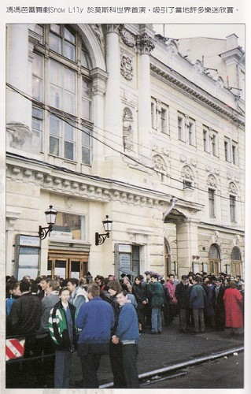
十月二日晚，狂风豪雨，却是我的芭蕾舞世界首演的第一夜，我们全体大伙儿赶去戏院，他们从地道走过马路，步行抵院，我母服了止痛药，勉强起来，由我与戚先生及阿强及佛乘弟子数人合力抬起马太太租来的轮椅，把我母抬上计程车开往戏院。
戏院是莫斯科音乐学院直属的影剧与芭蕾舞舞台，位于著名的拜帅尔大戏院对面横街内，相当陈旧，却是莫斯科音乐界人士视为圣地的学术性戏院，莫不以一登龙门为荣。至于拜帅尔大戏院，门面虽是希腊宫殿形式，内部却更陈旧落后，一百七十五年历史的辉煌，早已退色沦为通俗的戏院，观众以外国游客为主，良莠不齐，我们的小戏院只有不到两千位子，不及大戏院的三千多那么大派头，但是我们的观众全是俄国的上流社会人士与音乐艺术界人士，无不衣冠楚楚，彬彬有礼。以俄人社会之贫穷，居然见到这些身穿狐裘大衣的贵妇与西装晚服，来此古老戏院，完全不同于大舞台那边的杂牌便服的外国人。我们的观众对我都很有礼，一路上我都受到微笑迎与与鼓掌欢迎，我们进去坐在后排，台上就开戏了。
舞台不大，布景是抽象的，芭蕾舞员只有二十位，比我要求的二十五位少了些，可是他们男女舞蹈家都跳得很好，物也编得很好，马丁以他在北京曾任芭蕾舞团指导的身份，对俄人的编舞与跳演，都有好评，认为不愧是一流的舞团，服装设计也很清雅脱俗。美中不足是他们把我的原有故事更改了很多。减删了音乐与时间，而且把主戏放在男主角身上，女主角跳雪莲仙子反而戏少了，男女舞星气质都很文雅，跳的是古典芭蕾步法与动作，配角群舞则有时是古典，有时是现代舞，倒也配合得天衣无缝，我觉得很满意。
原本四幕，被他们改成只有两幕，原来两小时，他们改为九十分钟，音乐是少了半小时，不过观众并不知道，只有我知道。有人肯演出我已很庆幸，也不敢苛求了。全剧结束后，全体舞星牵手谢幕，然后男女主角出场谢幕，最后是我被呼出场，我在台上向观众鞠躬，全场观众起立狂热鼓掌欢呼，我退场数次，均被观众呼叫再出鞠躬。
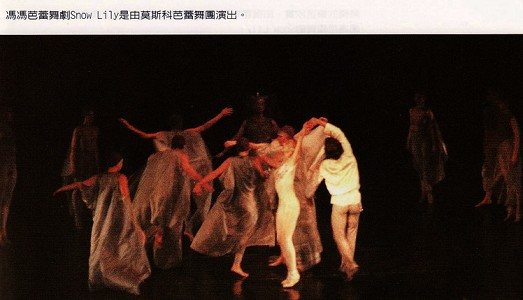
第二个晚上的演出，我们提早到场，发现街边行人道上早已排满人龙一二千人，等候进场。他们比昨日的更为整洁胜装，态度也更有礼貌，我与众友进场就座第五至第七排最后位置，前面坐了五位俄罗斯部长，他们都起立向我致敬及握手，还有很多俄国音乐名家，都纷纷来向我致敬，直到开演才静止下来。这第二晚的演出，他们比第一晚更卖力，跳舞得更有劲娇捷，引起全场两千观众热烈反应，掌声不绝，门外也来了数百个临时闻风而至的站票观众，全场的情绪高涨，更胜上次演出之夜，第一幕落幕之后，休息亮灯十分钟，几乎全场观众都潮涌来要我在节目单我的照片上签名，一时秩序大乱。他们是真正喜欢我的音乐了，我不停地为他们签名，有些俄国妇女过来亲吻我的颊向我致贺及献花，又向我母亲献花、说谢谢我母生了我这个儿子，也有很多俄人男子，多半是音乐家或艺术家，上来亲吻我拥抱我。戏院乱成一团糟，旁边的俄人说从末发生过观众这样拥抱作曲家的事，全场都疯狂骚动了。
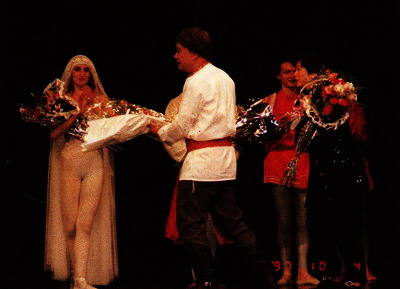 电铃先后响了三四次，灯光熄了又再亮，院方特别延长休息时间十分钟，让群众获得我的签名，很多观众手持一支玫瑰花或康乃馨来送给我母子，我们抱满了一怀的花，有些俄人对我说“真正好的是你的音乐，不是芭蕾舞！”“你超越了柴可夫斯基！”“你超越了狄布西”“你比史察拉汶斯基更伟大！”“你胜过拉威尔！”种种的恭维都听到了，完全泯除了民族间的歧异！有些俄人中年妇女含泪拥抱我，说了一大串我没听懂的话。
第二幕落幕以后，各舞星如上一夜的出场集体牵手向观众鞠躬，男女第一主角先后出场，站在前排谢幕，接受献花，然后后退数步，第二男主角把我从后台侧门牵手位出来，全场观众欢声雷动一一起立狂热鼓掌，声震全院，拼命叫喊“BRAVO”。台下跑上来很多小姐，其中大多数是佛乘宗的，以单小姐为首，上台向我献花捧场，我一一回礼，又把捧不完的花分赠主要的舞星，并且向他们、她们鼓掌，又向观众鼓掌，然后鞠躬退后，可
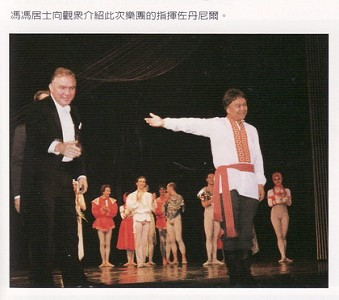是全场欢呼不停，我不得不一再而再上前鞠躬，先后大约有十一次之多，观众仍在狂热欢呼高喊我名字，不肯散去，佐丹尼亚指挥上台谢幕，风头也不及我的十分之一，在此种场合，作曲家受欢迎超过大指挥家，在俄国舞台上是前所未见的，更没听过作曲家比舞星风头更大，我算是第一个受到如此狂热欢迎的作曲家，这是后来在茶会中，俄人告诉我的。可能是事实罢？我是身穿乌克兰民族服装，白衬衣、红绣胸、红腰带、灰长裤、黑色长统软皮靴，头上戴了假发，卷卷的棕发，可以乱真，眉毛划粗了长了，远看是很像乌克兰人，可能是因此而被群众喜爱吧？他们在争论到底我是中国人或乌克兰人？问我，我说是中国人；他们却说我是乌克兰人。很多乌克兰人上来拥抱我，说以我为荣，又叽里咕噜讲一大串乌克兰语，我却半句也听不懂，我被他们好多男子亲吻了拥抱了，原来是他们的礼貌，俄式的大狗熊式拥抱真叫人吃不消。在茶会上，芭蕾舞男主角约瑟夫把我拥抱得差点断了肋骨，又在我嘴上亲吻，又把我高举起来，他们的男舞星人人都如此热情奔放得叫我吃不消，也真被他们感动得会爱上他们了。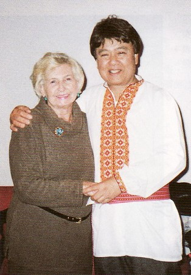
芭蕾舞团的教师是一九五○年代连续六年当选为苏联芭蕾舞后的伊沙多拉女士，这泣老小姐两个晚上在舞台上都紧拉我的手与她一同谢幕，在茶会中不时拥抱我，用俄文说她跳了一辈子舞，也没听过比我更好的芭蕾舞曲。然后，很多音乐家也来向我致贺了，芭蕾舞星们与佛乘文教基金会同仁一起干杯香槟酒吃俄国著名的鱼子，我是完全没空吃什么，辜负了李善单先生以千元美金设立的招待会。全场上百人都不断向我鼓掌，也向李善单鼓掌致谢，李先生在这第二晚比头一晚感到满意太多了，可是他悄悄说“冯大哥的音乐太棒了，应该要比这些人演得更好！他们还是未能完全表达音乐的境界！”
李善单的溢美之词令我惭愧，俄人的恭维也使我惭愧，我只不过是一个乐盲，自己瞎编乱写的作曲，还幼稚得很，怎敢当那么多过奖？真是闻之既喜且惧，今后更须竞业努力了。
从当年台北老火车站子夜含泪伫听“别离曲”，从博物馆后廊倾听音乐亭的古典音乐，到莫斯科著名舞台上鞠躬十多次谢幕，或许我的音乐前途仍未开始，但是，已往的音乐之旅程多么奇怪，一个乐盲，在莫斯科芭蕾舞台上接受观众两千余人的欢呼！回想当年少年，无钱购票被拒音乐会门外；回想当年，冒雨在檐下窃听小提琴家练琴，回想当年种种都如在昨日啊！
网注：缘尽则散
1998年6月21日傍晚，冯冯交予“佛乘世界”一批文稿 ；及签署出版
恊议书后，与李善单的友好关系随之告终。
原载《佛乘世界》第7期：1997年10月30日